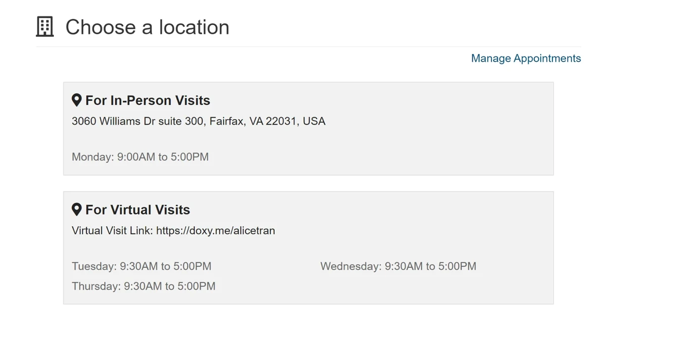
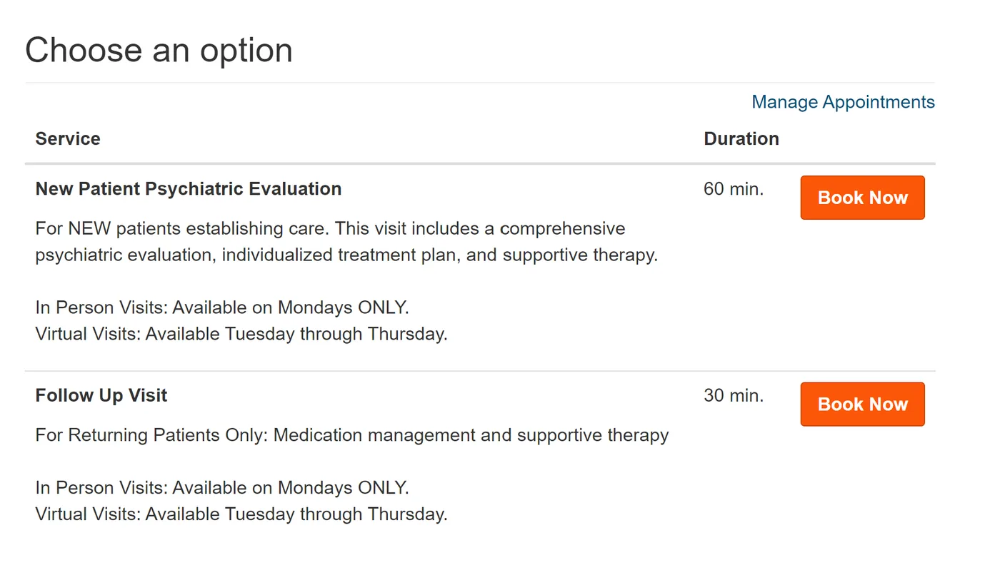
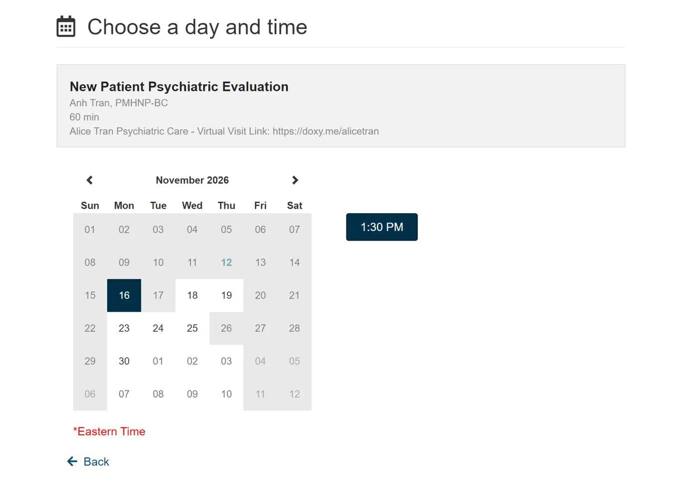
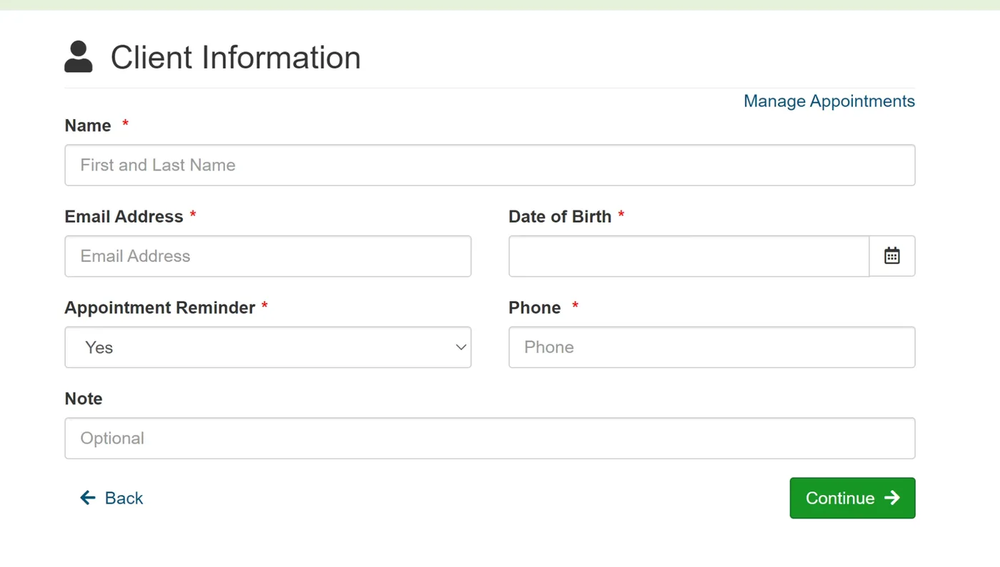
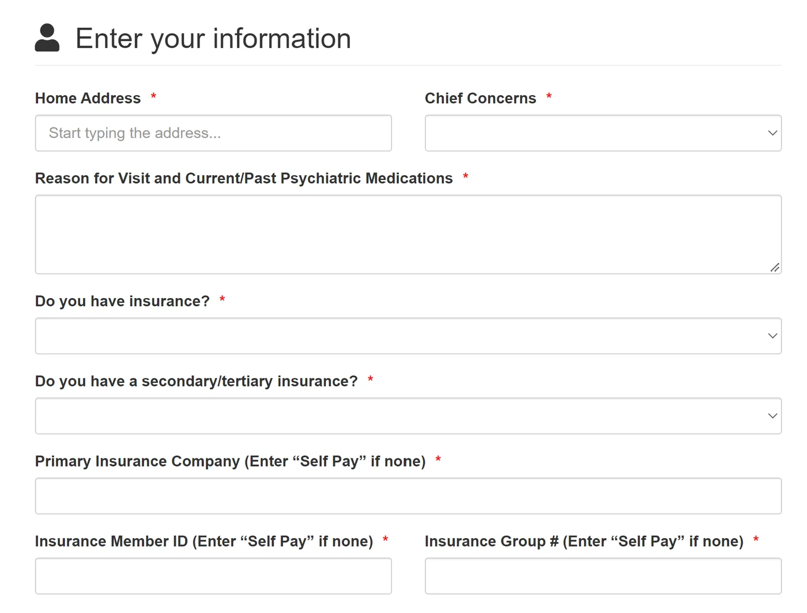
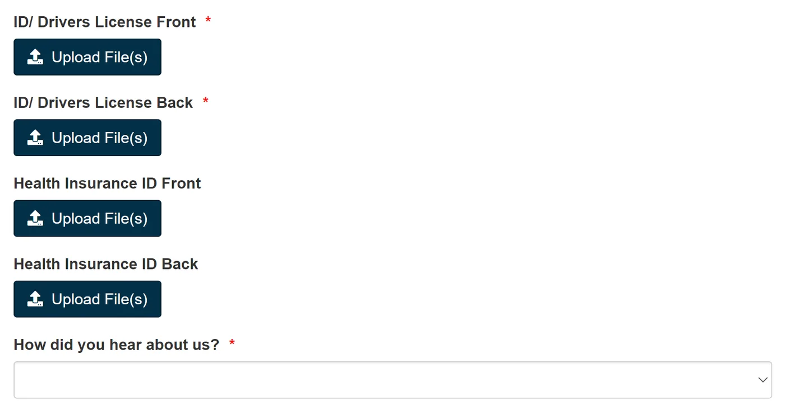
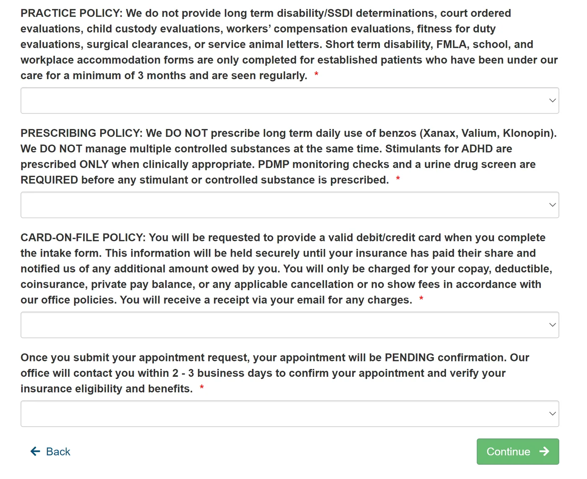
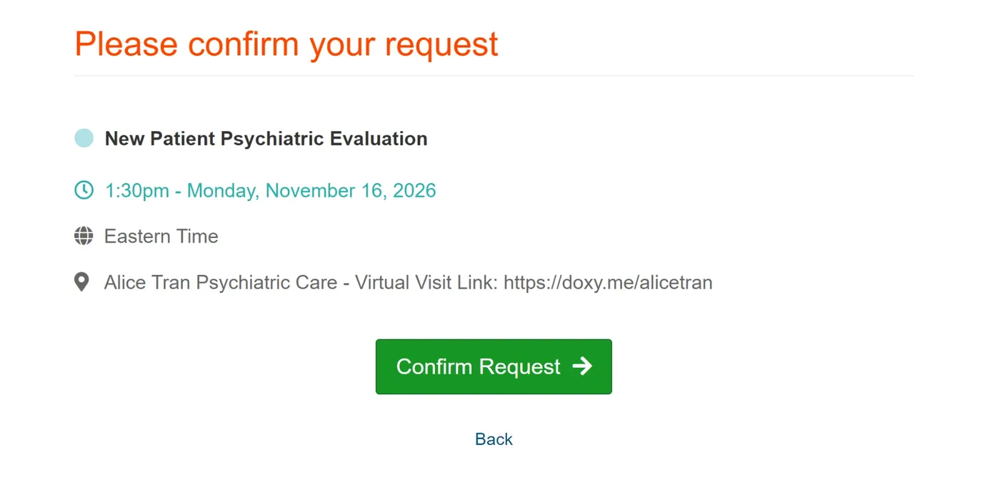

Đặt lịch trực tuyến mất khoảng 10 phút. Quý vị hãy làm theo các hình bên dưới và chuẩn bị sẵn giấy tờ tùy thân cùng thẻ bảo hiểm.
Mở trang đặt lịch →







Không. Khám trực tiếp tại văn phòng Fairfax chỉ vào thứ Hai. Lịch thứ Ba, thứ Tư và thứ Năm là khám qua video.
Chọn "No" cho các câu hỏi về bảo hiểm và gõ "Self Pay" vào ô công ty bảo hiểm, số thành viên và số nhóm. Giá tự trả là $400 cho buổi đánh giá ban đầu và $200 cho buổi tái khám 30 phút.
Mọi yêu cầu đặt lịch mới đều ở trạng thái chờ cho đến khi văn phòng kiểm tra bảo hiểm và xác nhận giờ hẹn với quý vị. Chúng tôi sẽ liên hệ trong 2 đến 3 ngày làm việc.
Chọn Follow Up Visit (30 phút). Mục New Patient Psychiatric Evaluation chỉ dành cho người khám lần đầu với chúng tôi.
Không cần. Người từ 18 đến 65 tuổi đang ở Virginia có thể đặt lịch trực tuyến. Bệnh nhân ở Maryland và Oregon có thể đặt lịch khám qua video theo hình thức tự trả.
Có. Gọi (703) 791-9099 hoặc nhắn tin (703) 791-9838 trong giờ làm việc, thứ Hai đến thứ Năm, 9 giờ sáng đến 5 giờ chiều. Đường dây tiếng Việt: (703) 791-9786.
Khám trực tiếp tại Fairfax vào thứ Hai · Khám qua video thứ Ba đến thứ Năm · Nhận hầu hết bảo hiểm
Hướng Dẫn Cho Bệnh Nhân